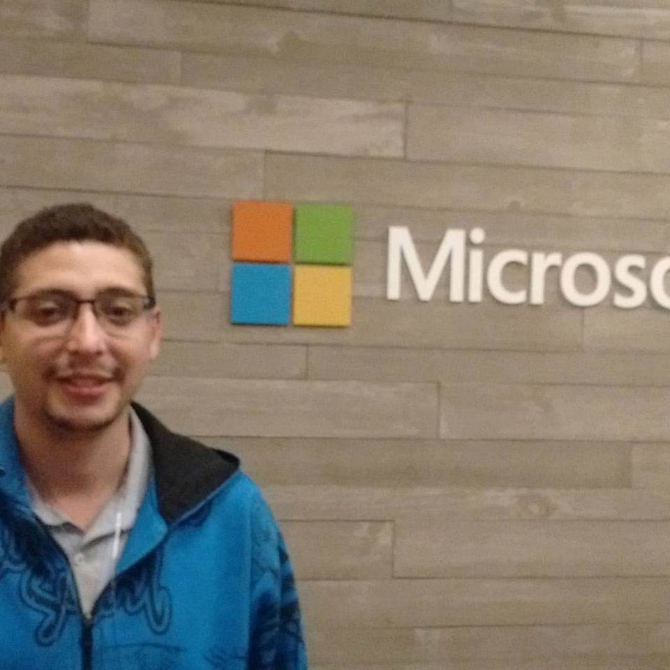

Everton Roberto dos Santos

Contato
beto.villadesko@gmail.com
Blog Apenas um conto
Facebook
Resumo das Qualificações
- Roteirista
- Game Designer
- Backoffice
Formação Acadêmica
Cursando Desenvolvimento a Jogos Digitais na Fatec Carapicuíba
Projetos
- Icarus- - LabLaboratório de Robótica da Fatec Carapicuíba
Experiência
- Atual
- Backoffice - conferência de documentos
- Anterior
- Operador de telemarketing
- Roteirista - atuando como membro do laboratório de robotica da Fatec Carapicuíba
- Game Designer - atuando como membro do laboratório de robotica da Fatec Carapicuíba
- Promotor de vendas
- Repositor